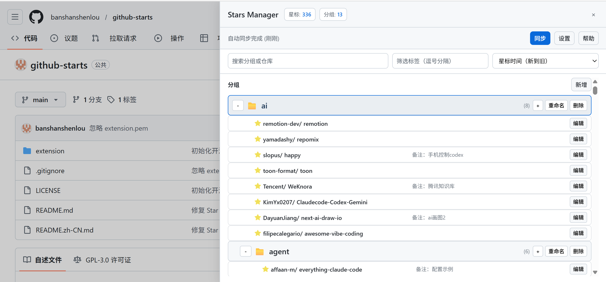
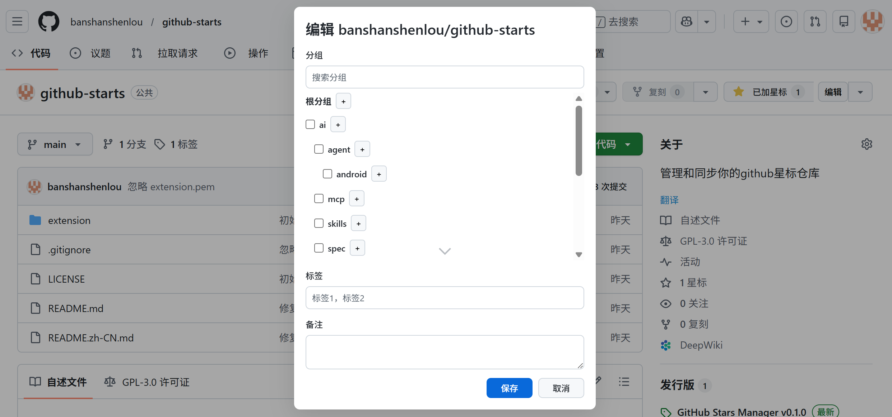
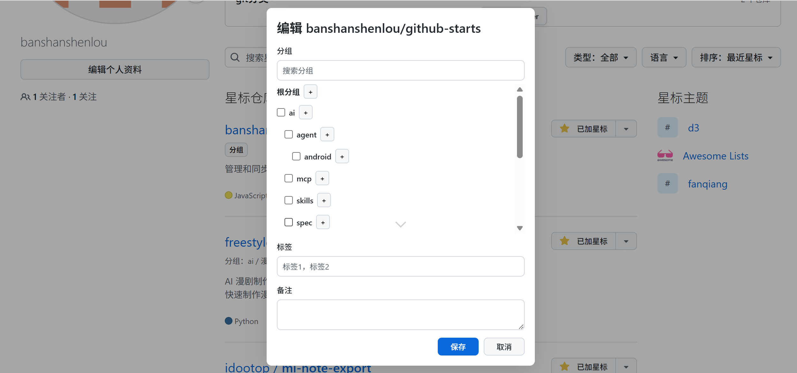

你的星标库
一眼找到要用的仓库
功能亮点
把星标变成可管理的收藏夹
轻量但完整的整理体系，让收藏像项目一样可维护。
效率体验
同步与安全
效率体验
更快、更顺、更少跳转
把时间留给阅读与评估，而不是翻找。
搜索更精准
标签与备注让检索更有语义。
分组树定位
层级结构快速聚焦目标。
内联编辑
Stars 与仓库页即改即存。
筛选更高效
组合标签快速收敛范围。
无需跳转
整理与浏览在 GitHub 内完成。
排序更清晰
按需求排列，优先级一眼可见。
公众号推荐
关注微信公众号：成为超级个体
获取更新、使用技巧与收藏方法。
成为超级个体
扫码关注
扫码关注
使用流程
三步把星标整理起来
从安装到同步只需要几分钟。
同步与隐私
你掌控数据流转
本地与 Gist 之间双向同步，可随时选择保留版本。
只在本地与 Gist
数据不会上传到第三方服务器。
冲突提示
遇到分歧可选择保留哪一份。
自动语言识别
中英文界面根据系统自动切换。
手动/自动同步
按需触发或定时同步。
版本选择
明确选择保留版本，避免误覆盖。
可随时撤销
Token 可随时撤销，仍可本地管理。
截图
功能截图
三张截图展示核心使用场景。

侧边抽屉分组树与星标列表
集中管理与快速筛选。

Stars 列表Stars 列表内联编辑
不离开列表，随时标注。

仓库页仓库页内联编辑
给每个仓库留下上下文。
如何安装
开发者模式安装
确保浏览器允许侧载扩展。
打开扩展管理页
chrome://extensions
如果 CRX 无法直接安装，请先启用开发者模式。
常见问题
安装与更新说明
先看这里，避免踩坑。